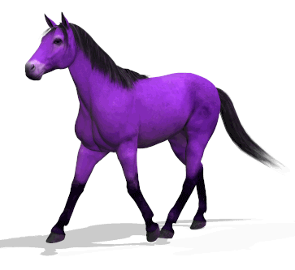
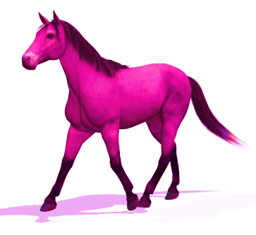

Jell-O Colored Horses
To turn the Emerald City horses their different colors, the production used tints made with Jell-O. This technique ensured that it would not be harmful to the horses and would also provided vibrant colors that would show up in Technicolor.
